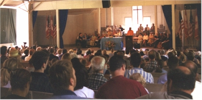
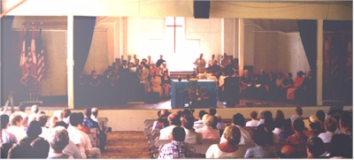
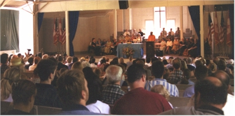
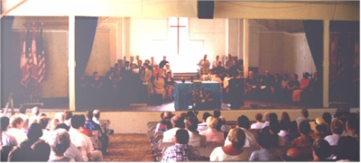

Ramakrishna-Vivekenanda Center of New York
Image Gallery
125th birthday of Thousand Island Park
July 27-30, 2000

 





Thousand Island park -- In July of 1875, the Rev. J.F. Dayan and a group of friends and colleagues met on the western end of Wellesley Island to found a camp meeting ground in the style of "chautauqua." Their dream was for a summer meeting place where citizens of the United States and Canada could meet for an uplifting vacation with family and friends. They named their summer village "Thousand Island Park."
On the week of July 27-30, 2000, more than 1000 current residents of the camp meeting ground met to celebrate the 125th birthday of the Park.
Friday evening, a jazz concert and reception were held featuring the Jazz Alliance North, and sponsored by the Vivekananda Cottage and the Ramakrishna-Vivekananda Center of New York. Swami Vivekananda summered in Thousand Island Park in 1895, and began the tradition of a retreat for his followers in the Park. The concert took place in the Park's tabernacle in the shadow of the Vivekananda Cottage; the music and the Indian and American refreshments were appreciated by hundreds of members of the T.I.P. community.
On Sunday morning, July 30, the park community met at 10 a.m. for a unity service of Celebration and Thanksgiving in the tabernacle. More than 350 people attended the service which was led by the Rev. Jim Brown, pastor of the Market Square Presbyterian Church in Harrisburg, PA. , and Swami Adiswarananda, the spiritual leader of the Ramakrishna-Vivekananda Center of New York, with readings and prayers presented by Park residents of the Protestant, Catholic, and Jewish faiths.